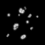
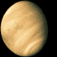
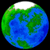
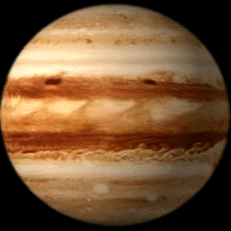
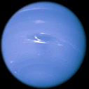
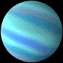
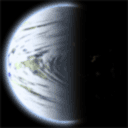
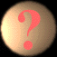

This category is always temporary, until the program can be made to classify them.
| StarGen Planet Types | |||
|---|---|---|---|
| Icon | Name | Description | |
| Rock | These are planets without atmospheres. They can be hot or cold. The only requirement is a lack of atmosphere. Examples of "rocks" in the solar system are Mercury and Pluto. | ||
|  | Asteroids | These are small airless bodies. Any planet with a mass les than .1% that of Earth is designated an asteroid. It is assumed that there is a whole belt of such objects. | |
|  | Venusian | These are planets with a runaway greenhouse effect. The defining characteristics are that they have an atmosphere, water covering less than 5% of their surface and a surface temperature greater than the boiling point of water (and thus actually should have no surface water at all). | |
|  | Terrestrial | These are Earth-like planets with an atmosphere and a hydrosphere, Water covers between 5% and 95% of their surface. | |
| Water | These planets have an atmosphere and a hydrosphere. The water covers more than 95% of the planet's surface. | ||
| Martian | These planets have a thin atmosphere and little or no surface water. Less than 5% of the surface is covered with water and less than 95% with ice. | ||
| Ice | These planets are covered in ice. It covers at least 95% of the surface. These are generally planets that would be terrestrials if they were warmer. Some are so far out they retain Hydrogen, but are so cold their gases freeze. There is no example of this type of planet in the solar system. | ||
|  | Jovian | These are the larger gas giants, represented in the solar system by Jupiter and Saturn. They have masses at least 20 times that of the Earth. | |
|  | Sub-Jovian | These are smaller gas giants such as Neptune and Uranus. They have masses less than 20 times that of Earth. The cut-off is arbitrary, and based on the fact that the blue/green Neptune and Uranus look quite different from the striped Juptier and Saturn. | |
|  | Gas Dwarf | These are planets which like the gas giants retain Hydrogen, but are nonetheless mostly rock. Their gas mass is less than 20% of their total mass. They tend to be very far from their sun. | |
|  | 1-Face | This is another class of planets not present in our solar system. It consists of planets whose rotation is tidally locked such that the same side always faces their sun (much as the Moon always presents the same face towards Earth) and which have an atmosphere. Barren 1-face worlds, like our own Mercury, are listed as "Rock". | |
|  | Unknown | This designation is used for planets that are not classifiable as
one of the above types.
This category is always temporary, until the program can be made to classify them. |
|